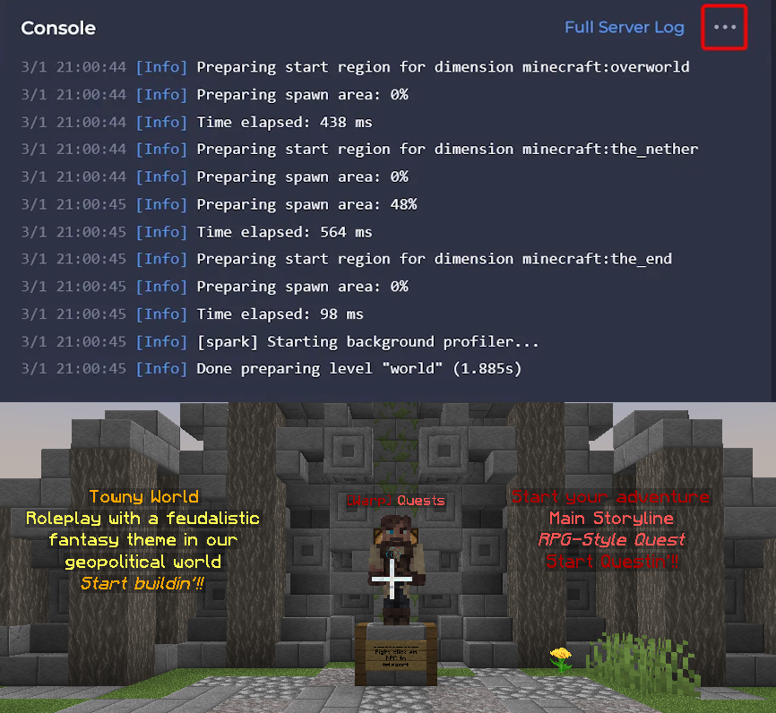

Portfolio
Minecraft Java Plugins
Overview: Developed custom Java applications for a live server, supporting 200+ lifetime users and 1,000+ total downloads.
Technical Decisions:
- API Ecosystem: Integrated third-party APIs to manage economy states, entity routing, and region permissions.
- Spatial Data: Leveraged the WorldEdit API for large-scale spatial data manipulation and weighted block generation.
- Access Control: Implemented a custom RBAC gateway to validate user privileges before executing critical backend operations.

Personal Finance Dashboard
Overview: An offline-first financial dashboard that processes and visualises user income, expenses, and savings metrics in real-time.
Technical Decisions: Built in vanilla ES6 JavaScript to handle DOM manipulation and state management. Utilised the browser's native Web Storage API for secure, client-side data persistence, and integrated Chart.js for dynamic data visualisation.

Dungeons & Dungeons & Dungeons
Overview: A Java command-line application that implements scalable Object-Oriented Programming (OOP) architecture algorithmic logic, and data persistence.
Technical Decisions: Engineered an extensible class hierarchy using inheritance and polymorphism. Implemented recursive data structures for uniform object processing and utilised CSV I/O for state tracking. Integrated comprehensive JUnit testing across all core game logic to ensure system stability.

Counter Knights: Arcane Offensive
Overview: AA WebGL Unity application implementing deterministic state management, AI routing, and algorithmic physics calculations.
Technical Decisions: Developed AI state machines driven by ray-casting for line-of-sight detection. Engineered a dynamic recoil and combat system using real-time vector maths and time-decay algorithms.